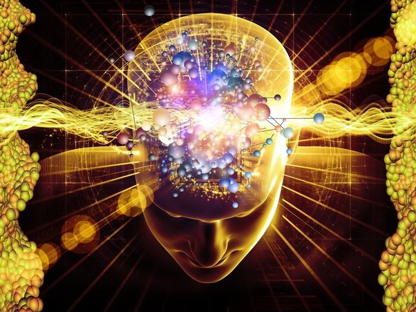
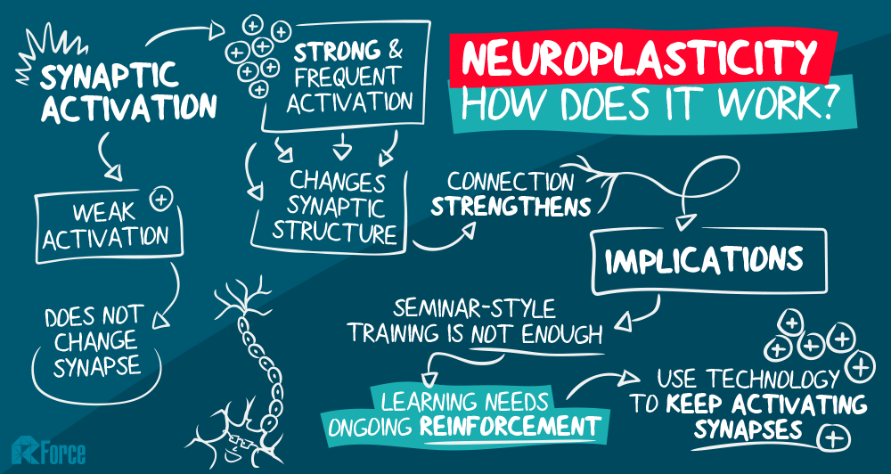
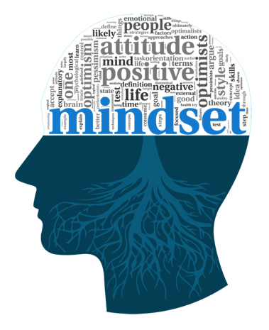
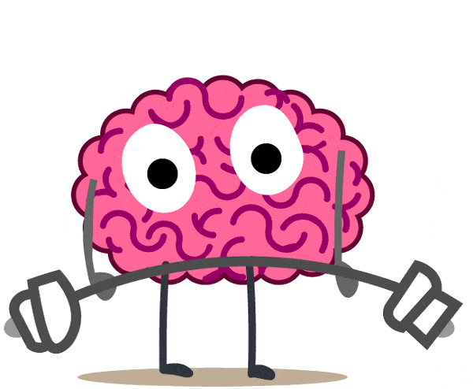

Understanding the principles of neuroplasticity helps us to implement it in our lives. When we keep our brains busy, it stays healthy. Repeatedly practise an activity or access a memory, their neural networks -- groups of neurons that fire together, creating electrochemical pathways -- shape themselves according to that activity or memory.
Learning a new language, playing an instrument, or getting more physically active will help with stress and well-being. Do new things, practice as it creates new pathways and helps your brain to become more neuroplastic.
I can start listening to music, going for more walks or swimming. These activities will help in increasing my neuroplasticity growth


A growth mindset means that you thrive on challenges and don’t see failure as a way to describe yourself but as a springboard for growth and developing your abilities. Your intelligence and talents are all susceptible to development.
I am always a positive thinking person, and I was surprised when I read about the growth mindset. I was already practising it.
Understanding and acknowledging the failures and setting plans to overcome the losses. We need to value The process of learning over the end result.
Learning is non ending process. The day we stop learning new things thats when we start moving towards the dark. Moving forward along with my busy life, I will make sure to learn something new all the time, spend time with family and also prioritize my health and life style.